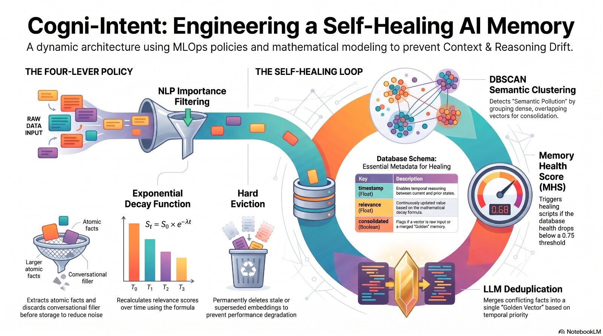

System Workflow & Auto-Healing Process
The step-by-step journey of how data flows through Cogni-Intent: from ingesting new doctor notes, checking for contradictions, safely merging clashing facts, to keeping complete audit records.
Prototype to Production Scaling
zoom_in Enlarge
Fig 4: 4 Essential Upgrades for Long-Term AI Memory Architecture
Self-Healing Memory & MLOps Loop
zoom_in Enlarge
Fig 5: Cogni-Intent Autonomous MLOps Self-Healing Engine
Interactive Daemon Execution Pipeline
Deterministic NLI Guardrails
Cross-encoder Natural Language Inference models (e.g. DeBERTa-v3-large) verify every LLM-generated Golden Fact against raw historical statements before committing to ChromaDB.
Canary Probe Monitoring
Synthetic ground-truth facts with known target vectors are periodically queried against the index. If retrieval rank degrades below 100%, an automated re-clustering and memory audit cycle triggers instantly.
Decoupled Microservice Architecture
The inference API (physician queries) and the MLOps healer (UMAP + HDBSCAN + LLM) operate as separate processes. Maintenance and vector surgery never block critical healthcare agent availability.